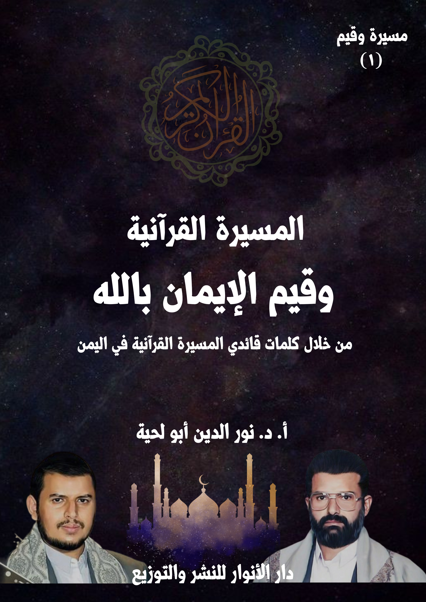
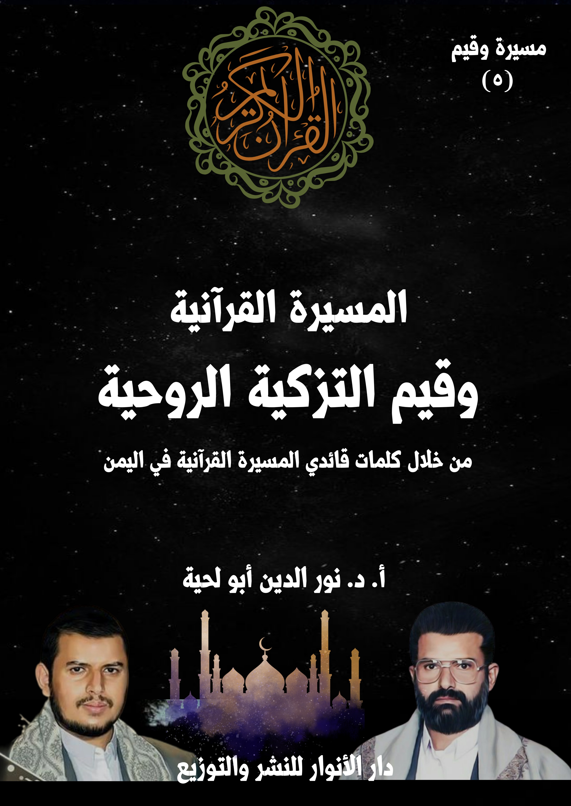
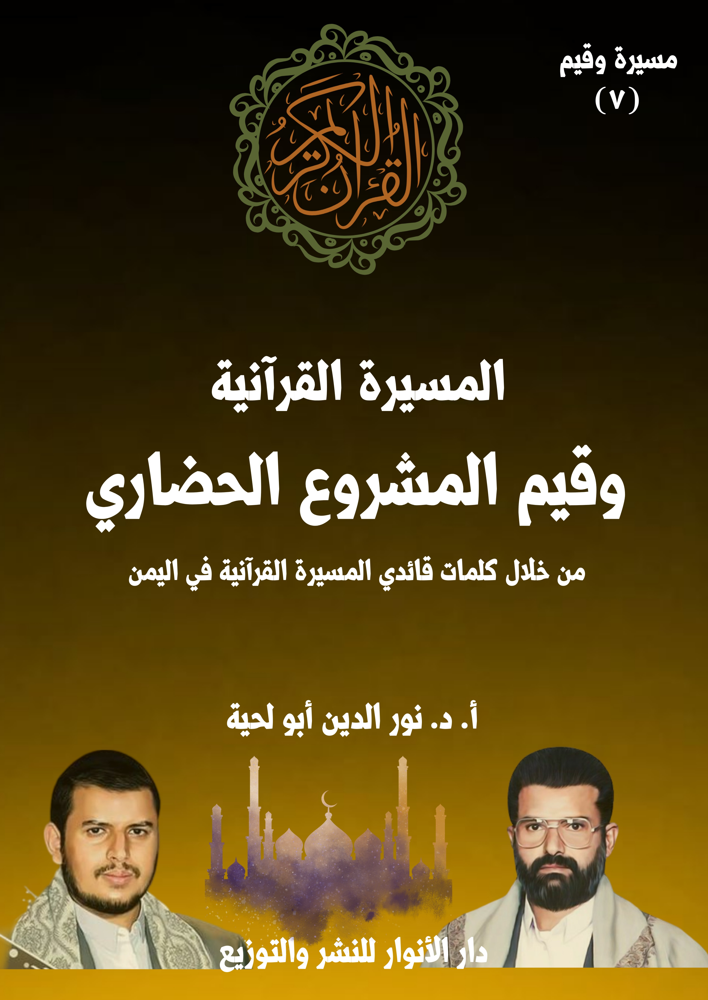

تحميل السلسلة بصيغة مصورة : هنا
تحميل السلسلة بصيغة نصية: هنا
تحميل السلسلة من التلغرام: هنا
للاستماع للتسجيلات المرتبطة بالسلسلة على اليوتيوب: هنا
للاستماع للتسجيلات المرتبطة بالسلسلة على التلغرام: هنا
تحميل جميع كتب المؤلف بصيغة مصورة : هنا
تحميل جميع كتب المؤلف بصيغة نصية: هنا
سلسلة مسيرة وقيم
سلسلة علمية تنويرية تحاول التعرف على القيم التي تحملها المســيرة القرآنية التي انطلقت الدعوة إليها من اليمن ، ومدى صلتها بالقرآن الكريم، ومدى إمكانية تطبيقها بروحها ومعناها في سائر البلاد الإسلامية، وهي مستمدة من خلال كلمات قائدي المســيرة القرآنية، ولها شروح صوتية مرتبطة بها بلغت 1300 تسجيل [كل تسجيل في ربع ساعة]، تبثها إذاعة ســام اف ام اليمنية، وغيرها من الإذاعات اليمنية، ويمكن الاستماع لها من خلال القناة الخاصة بها في التلغرام، أو اليوتيوب.
وهي في سبعة أجزاء:
الجزء الأول: المســيرة القرآنية وقيم الإيمان بالله
الجزء الثاني: المســيرة القرآنية وقيم الإيمان بالمعاد
الجزء الثالث: المســيرة القرآنية ومنابع الهداية الصافية
الجزء الرابع: المســيرة القرآنية ومنابع الضلال والإضلال
الجزء الخامس: المســيرة القرآنية وقيم التزكية الروحية
الجزء السادس: المســيرة القرآنية وقيم التزكية الأخلاقية
الجزء السابع: المســيرة القرآنية وقيم المشروع الحضاري
الكتاب: المسيرة القرآنية وقيم الإيمان بالله
الوصف: من خلال كلمات قائدي المسيرة القرآنية باليمن
السلسلة: مسيرة وقيم
المؤلف: أ. د. نور الدين أبو لحية
الناشر: دار الأنوار للنشر والتوزيع
الطبعة: الأولى، 1445 هـ
عدد الصفحات: 375
صيغة: PDF
صيغة: DOCX
ISBN: 978-620-4-72102-6
لمطالعة الكتاب من تطبيق مؤلفاتي المجاني وهو أحسن وأيسر: هنا

يهدف هذا الكتاب إلى البحث عن القيم المرتبطة بالركن الأول من أركان الإيمان، وهو [الإيمان بالله]، والذي لقي عناية كبيرة من قائدي المســيرة القرآنية، حيث إنهما يذكرانه، وفي كل مناسبة، ويعتبرانه الأساس الذي تقوم عليه المســيرة القرآنية، سواء في جوانبها الفكرية والنظرية، أو جوانبها التطبيقية والتنفيذية، وسواء تلك التي تتعلق بالأخلاق الفردية والاجتماعية، أو تلك التي تتعلق بالمشروع الحضاري الذي لا يكتفي باليمن، وإنما يشمل المسلمين جميعا، بل البشرية جميعا.
وقيمة اهتمامهما بهذا الركن تتجلى عند استعراضنا للواقع الفردي أو الاجتماعي أو الدولي أو الحضاري الذي تعيشه البشرية، حيث نجد أكثرهم يعيشون الغفلة التامة عن الله، والبعد التام عنه، بل الجحود له، وعدم الاعتراف به، وهو ما يشكّل نسبة كبيرة من البشرية.
وقد حاول الكتاب طرح ما ذكره قائدا المســيرة القرآنية حول الإيمان بالله، وكيفية تحويله إلى إيمان حي فعال مؤثر عقلاني، يمكنه أن ينقذ المسلمين من حالة الغفلة التي يعيشونها، وينقذ غيرهم من الإلحاد من خلال الطروحات العقلانية والوجدانية التي يتبناها ويدعو إليها.
الكتاب: المسيرة القرآنية وقيم الإيمان بالمعاد
الوصف: من خلال كلمات قائدي المسيرة القرآنية باليمن
السلسلة: مسيرة وقيم
المؤلف: أ. د. نور الدين أبو لحية
الناشر: دار الأنوار للنشر والتوزيع
الطبعة: الأولى، 1445 هـ
عدد الصفحات: 387
صيغة: PDF
صيغة: DOCX
ISBN: 978-620-4-72102-6
لمطالعة الكتاب من تطبيق مؤلفاتي المجاني وهو أحسن وأيسر: هنا

يهدف هذا الكتاب إلى البحث عن القيم المرتبطة بالركن الثاني من أركان الإيمان، وهو [الإيمان بالمعاد]، والذي لقي عناية كبيرة من قائدي المسيرة القرآنية، حيث إنهما يذكرانه، وفي كل المحال التي تستدعي الترغيب أو الترهيب أو التذكير والتوعية، باعتبار الوعد والوعيد المرتبط بالمعاد هما الدافع والحافز الذي يحرّك لكل مكرمة، ويثني عن كل مثلبة.
ولذلك نراهما يستعملانه للدعوة للهداية والاستقامة، وفي جوانبها المختلفة؛ فلا يمكن لمن لم يردعه الوعيد، أو يحفزه الوعد أن يرغب في عمل صالح، أو ينزجر عن عمل قبيح.
بالإضافة إلى أنهما يستعملانه كأسلوب من أساليب تحقيق العزاء والسلوى؛ فلا يجبر أحزان النفس وآلامها، سوى تذكر الجزاء الإلهي، وما أعد الله تعالى للمؤمنين الصابرين الراضين المستقيمين، ولا يشفي صدورهم من أعدائهم الظالمين سوى ما يعرفون من المصير الذي سيصيرون إليه.
وقبل ذلك كله يستعملانه لتحقيق المعرفة الصحيحة بالله، فلا يمكن أن يعرف الله من لم يعرف المعاد، لأن الحياة حينها ـ ومن دون معاد ـ ستكون عبثا لا معنى لها، والله غني عن أن يعبث أو يلهو أو يخلق ما لا غاية له، كما أنه أعدل من أن يترك الظالمين من دون أن يعاقبهم، وهو أرحم وأكرم من أن يترك المؤمنين الصابرين من غير أن يكافئهم.
الكتاب: المسيرة القرآنية ومنابع الهداية الصافية
الوصف: من خلال كلمات قائدي المسيرة القرآنية باليمن
السلسلة: مسيرة وقيم
المؤلف: أ. د. نور الدين أبو لحية
الناشر: دار الأنوار للنشر والتوزيع
الطبعة: الأولى، 1445 هـ
عدد الصفحات: 575
صيغة: PDF
صيغة: DOCX
ISBN: 978-620-4-72102-6
لمطالعة الكتاب من تطبيق مؤلفاتي المجاني وهو أحسن وأيسر: هنا

يهدف هذا الكتاب إلى محاولة التعرف على منابع الهداية الصافية التي تتبناها المسيرة القرآنية، وذلك من خلال تصريحات قائديها، ذلك أنه لا يمكن التعرف على المصادر التي تقوم عليها القيم المختلفة من دون التعرف على مصادر تلقيها.
وقد رأينا من خلال استقراء ما ورد في كلمات قائدي المسيرة القرآنية ثلاثة مصادر كبرى:
أولها: القرآن الكريم، باعتباره المصدر الأول والأكبر للإسلام بعقائده وشرائعه وقيمه، وباعتباره الكتاب المحفوظ الذي لا يمكن أن تمتد إليه أيادي التحريف والتبديل، وبذلك يكون الملجأ الذي يلجأ إليه كل من يريد أن ينفي عن الدين كل ما علق به عبر العصور المختلفة.
وثانيهما: النبوة، وهما لا يقصدان بها اختصارها في السنة النبوية، وإنما يقصدان بها النبوة نفسها، ابتداء من شخصية النبي نفسه، وشمائله وأخلاقه وكل تصرفاته، باعتبارها جميعا تمثل الهدي الإلهي، وبأجمل وأكمل صورة، ولهذا لم يدعنا الله تعالى إلى تطبيق ما يقوله رسول الله صلى الله عليه وآله وسلم فقط، وإنما دعانا مع ذلك إلى التأسي به جميعا.
وثالثها: الولاية، وويقصدان بها الولاء الكامل لأئمة الهدى الذين يمثّلون النبوة، ويسيرون على هديها، لينفوا عن الدين تحريف الغالين، وانتحال المبطلين، وتأويل الجاهلين، وليقيموا الحياة الإسلامية على أساس الحاكمية الإلهية، وفي كل المجالات.
وقد تحدث قائدا المسيرة القرآنية عن هذه المنابع الثلاثة، وكيف التعامل الصحيح معها، كما تحدثا عن الانحرافات التي وقعت بشأنها، ذلك أنه لا يمكن أن تتأسس أي منظومة فكرية من دون تحديد المصادر التي تتلقى منها، والتي تميزها عن غيرها.
الكتاب: المسيرة القرآنية ومنابع الضلال والإضلال
الوصف: من خلال كلمات قائدي المسيرة القرآنية باليمن
السلسلة: مسيرة وقيم
المؤلف: أ. د. نور الدين أبو لحية
الناشر: دار الأنوار للنشر والتوزيع
الطبعة: الأولى، 1445 هـ
عدد الصفحات: 482
صيغة: PDF
صيغة: DOCX
ISBN: 978-620-4-72102-6
لمطالعة الكتاب من تطبيق مؤلفاتي المجاني وهو أحسن وأيسر: هنا

يهدف هذا الكتاب إلى محاولة التعرف على منابع الضلال والإضلال، والتي حذّر منها قائدا المسيرة القرآنية، بناء على أمرين مهمين، كلاهما دل عليه القرآن الكريم:
أولهما ـ أنه لا يمكن الاستفادة الصحيحة من منابع الهداية الصافية، ولا الالتزام الصحيح بالقيم المرتبطة بها إلا بعد التخلص والتوقي من كل منابع الضلال والإضلال، لأنها تمثل سبل الغواية، ومن سار عليها، أو حنّ إلى السير فيها لن يكون من السائرين على الصراط المستقيم.
ثانيهما ـ أنه لا يكفي أن يتجنب المؤمن السير في سبل الغواية، ولا الحذر منها، بل عليه أيضا واجب البراءة والتحذير منها، ذلك أنه يدخل ضمن النهي عن المنكر، ولا يمكن أن يتحقق ذلك من دون التعرف على أئمة المنكر، وفضحهم، وفضح كل الوسائل والأساليب التي يستعملونها.
بناء على هذا نرى اهتمام قائدي المسيرة القرآنية بالتعريف بسبل المجرمين، ومنابع الضلال والإضلال، والتحذير منها، ومن الوسائل والأساليب التي يستعملونها، وقد رأينا من خلال استقراء كلامهما في هذا الجانب أنه يمكن تقسيمها إلى ثلاثة منابع كبرى:
أولها: منبع الشيطان الرجيم، باعتباره المنبع الذي تقوم عليه سائر المنابع.
ثانيها: منبع النفاق، وهو المنبع الذي يستعمله الشيطان لتحريف دين الله تعالى من خلال أولئك الذين لم يخلصوا الولاء له، ولا الصدق في الالتزام به.
ثالثها: منبع الكفر والاستكبار، ويشمل كل الطغاة والمستكبرين والملأ الذين يستعملون كل الوسائل للإضلال والإفساد.
الكتاب: المسيرة القرآنية وقيم التزكية الروحية
الوصف: من خلال كلمات قائدي المسيرة القرآنية باليمن
السلسلة: مسيرة وقيم
المؤلف: أ. د. نور الدين أبو لحية
الناشر: دار الأنوار للنشر والتوزيع
الطبعة: الأولى، 1445 هـ
عدد الصفحات: 616
صيغة: PDF
صيغة: DOCX
ISBN: 978-620-4-72102-6
لمطالعة الكتاب من تطبيق مؤلفاتي المجاني وهو أحسن وأيسر: هنا

يهدف هذا الكتاب إلى محاولة التعرف على ما ذكره قائدا المسيرة القرآنية حول ما يُطلق عليه [التزكية الروحية] أو [التربية الروحية]، أو [علم السلوك]، أو [علم الإحسان]، أو كيفية التواصل مع الله، وتهيئة النفس لتصبح أهلا لذلك.
وكل ذلك ـ مهما اختلفت تسميته ـ من المعارف القرآنية الضرورية التي وردت في أكثر القرآن الكريم، فهو يدعونا إلى تهذيب أنفسنا، وتربيتها، ومجاهدتها لتصبح أهلا للقرب من ربها، وأهلا لكل المقامات الشريفة التي ترتبط بذلك القرب.
وبناء على البصائر القرآنية المرتبطة بالتزكية الروحية نرى اهتمام قائدي المسيرة القرآنية بالحديث عنها في أكثر المناسبات، باعتبار أن القرآن الكريم هو الكتاب الذي يدلنا على الصراط المستقيم الذي به نتعرف على الله، وبه نهذب أنفسنا لنسلك السبيل إليه.
وقد رأينا من خلال استقراء ما ذكراه في هذا الجانب المهم، أنه يمكن تقسيمها إلى ثلاثة أقسام:
الأول: حول الأسس التي تقوم عليها التزكية، وذلك للعودة بها إلى المرجعية القرآنية، بدل تلك المرجعيات الكثيرة التي وقعت فيها الجهات التي اهتمت بهذا الجانب، حيث ربطوا التزكية بالكثير من الطقوس والمفاهيم الغريبة التي لا علاقة لها بالقرآن الكريم.
الثاني: حول وسائل التزكية، والتي يشير إليها قوله تعالى: ﴿يَا أَيُّهَا الَّذِينَ آمَنُوا اتَّقُوا اللَّهَ وَابْتَغُوا إِلَيْهِ الْوَسِيلَةَ وَجَاهِدُوا فِي سَبِيلِهِ لَعَلَّكُمْ تُفْلِحُونَ﴾ [المائدة: 35]
الثالث: حول ثمار التزكية، وهي تلك الصفات التي وصف الله تعالى بها عباده الصالحين المخلصين، من كونهم تائبين ومتقين ومتوكلين وصابرين وشاكرين وراجين وخائفين ومحبين وغير ذلك من الصفات.
الكتاب: المسيرة القرآنية وقيم التزكية الأخلاقية
الوصف: من خلال كلمات قائدي المسيرة القرآنية باليمن
السلسلة: مسيرة وقيم
المؤلف: أ. د. نور الدين أبو لحية
الناشر: دار الأنوار للنشر والتوزيع
الطبعة: الأولى، 1445 هـ
عدد الصفحات: 635
صيغة: PDF
صيغة: DOCX
ISBN: 978-620-4-72102-6
لمطالعة الكتاب من تطبيق مؤلفاتي المجاني وهو أحسن وأيسر: هنا

يهدف هذا الكتاب إلى محاولة التعرف على ما ذكره قائدا المسيرة القرآنية حول قيم التزكية الأخلاقية، باعتبارها من الأركان الكبرى التي تُبنى عليها الشخصية المسلمة، كما يبنى عليها المجتمع المسلم، والأمة المسلمة.
وقد قسّمناه إلى سبعة فصول، تناولنا فيها أمهات الأخلاق الكبرى، ومظاهرها، ومنابعها، وكيفية تهذيب النفس من سيئها، وكيفية تحليته بفاضلها، وقدمنا لذلك بفصل حول [المسيرة القرآنية وأسس الأخلاق]، حتى نتعرف من خلاله على نظرة قائدي المسيرة القرآنية للأخلاق ومصادرها، وكيفية ربطها بالدين من جوانبه المختلفة.
ثم تناولنا في الفصل الثاني [المسيرة القرآنية والتنزه عن الاستعلاء]، وما يرتبط به من العجب والغرور والكبر، وما يرتبط بالتنزه عنه من التواضع واللين.
ثم تناولنا في الفصل الثالث [المسيرة القرآنية والتنزه عن الظلم]، وما يرتبط به من أنواع العدوان المختلفة.
ثم تناولنا في الفصل الرابع [المسيرة القرآنية والتنزه عن الفواحش]، وما يرتبط بها من أنواع الرذائل والانحرافات والشذوذ.
ثم تناولنا في الفصل الخامس [المسيرة القرآنية والتنزه عن الترف] ، وما يرتبط به من التبذير والكسب الحرام، وما يرتبط بالتنزه عنه من الاعتدال والاقتصاد والتوازن.
ثم تناولنا في الفصل السادس [المسيرة القرآنية وحفظ اللسان] ، وما يرتبط به من آداب الكلام، والمجالات الصحيحة التي يمكن أن يستعمل فيها.
ثم تناولنا في الفصل السابع [المسيرة القرآنية والبر والإحسان] ، وما يرتبط بها من التعاون والتكافل والصلة ونحوها.
الكتاب: المسيرة القرآنية وقيم المشروع الحضاري
الوصف: من خلال كلمات قائدي المسيرة القرآنية باليمن
السلسلة: مسيرة وقيم
المؤلف: أ. د. نور الدين أبو لحية
الناشر: دار الأنوار للنشر والتوزيع
الطبعة: الأولى، 1445 هـ
عدد الصفحات: 702
صيغة: PDF
صيغة: DOCX
ISBN: 978-620-4-72102-6
لمطالعة الكتاب من تطبيق مؤلفاتي المجاني وهو أحسن وأيسر: هنا

يهدف هذا الكتاب إلى محاولة التعرف على ما ذكره قائدا المسيرة القرآنية حول قيم المشروع الحضاري، والذي يمثل الإسلام أولا، باعتبار أن حقيقته وأهدافه لا ترتبط فقط بإصلاح الأفراد والمجتمعات، وإنما ترتبط ـ كذلك، وبنفس الدرجة ـ بتحقيق الحاكمية الإلهية في الأرض، ومواجهة كل المشاريع الشيطانية التي تعارضها.
وهو يمثل ـ كذلك ـ الأمة الإسلامية، أفرادا ومجتمعات، ذلك أن من مسؤولياتها الكبرى أن تكون أمة شاهدة على الناس، ومكلَّفة بأن تعطي النموذج الأعلى للإسلام، بالإضافة إلى مسؤوليتها في تحقيق العدل، وحماية المستضعفين، ومواجهة المستكبرين والطغاة، سواء داخل الأمة أو خارجها.
وهو يمثل ـ كذلك ـ القرآن الكريم؛ فلا يمكن أن تُطبق التعاليم القرآنية بمعزل عن الاهتمام بتحقيق الحاكمية الإلهية، والأمر بالمعروف والنهي عن المنكر، والجهاد في سبيل الله، وكل المسؤوليات الكبرى التي تسعى لتحقيق الاستقامة والعدالة والتقوى في المجتمع والأمة، بل في الأرض جميعا.
وهو يمثل ـ كذلك ـ النبوة؛ فرسول الله صلى الله عليه وآله وسلم لم يكن مشروعه الرسالي قاصرا على العرب، ولا على من يجاورهم، بل كان عاما لكل البشرية، لتحريرها من كل ألوان الجاهلية، وفي كل العصور، ولذلك أرسل الكتب للملوك والأمراء، ليدعوهم إلى دين الله، وما يحمله من المعاني الحضارية، بل أشار الله تعالى عن دوره في ذلك حين اعتبر رسالته رحمة للعالمين.
وهو يمثل ـ كذلك ـ الولاية، باعتبارها امتدادا لتحمل مسؤوليات النبوة في إقامة الحق والعدل، والثورة على الطغيان والاستبداد، وتحكيم الشريعة الإلهية.